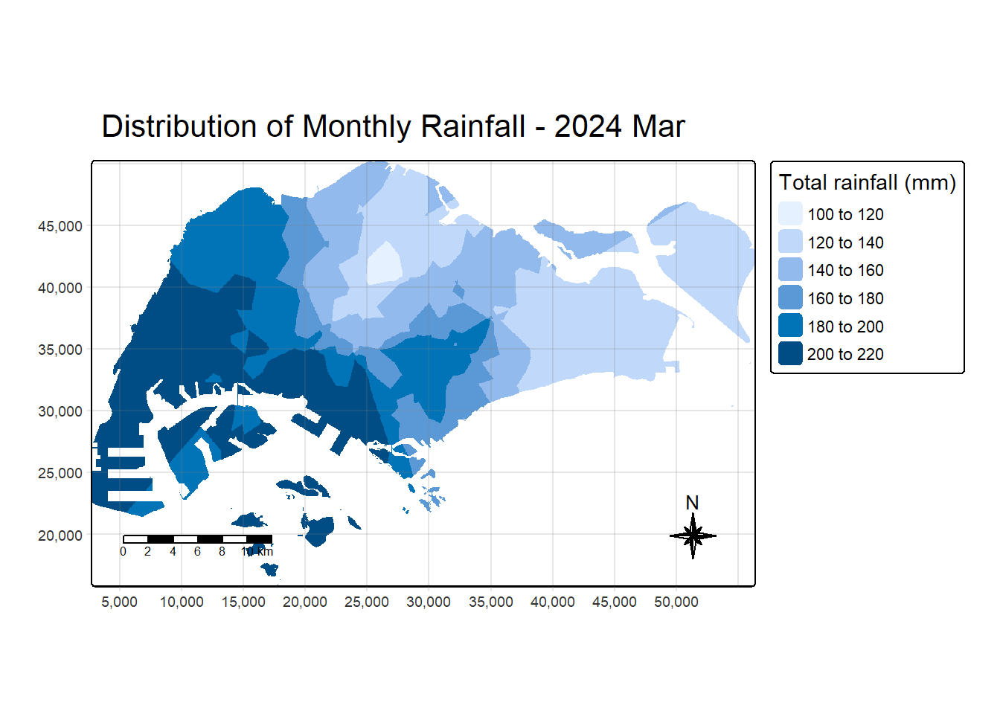
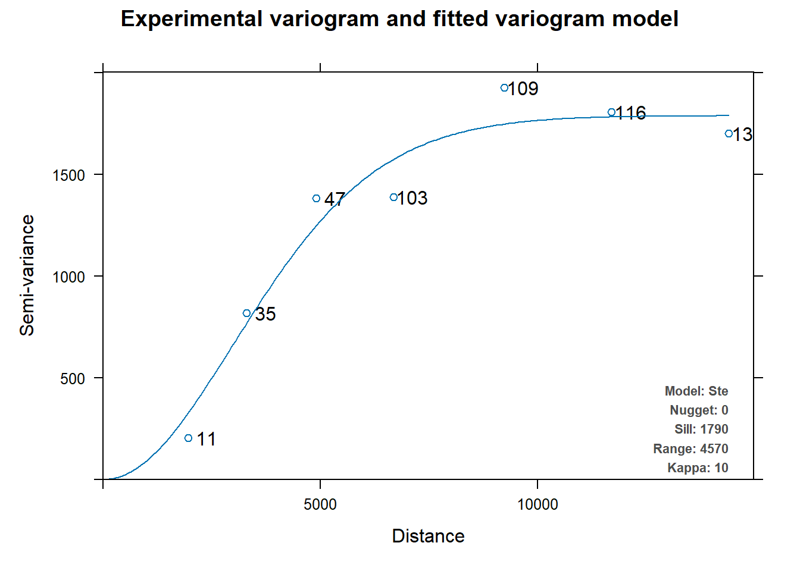
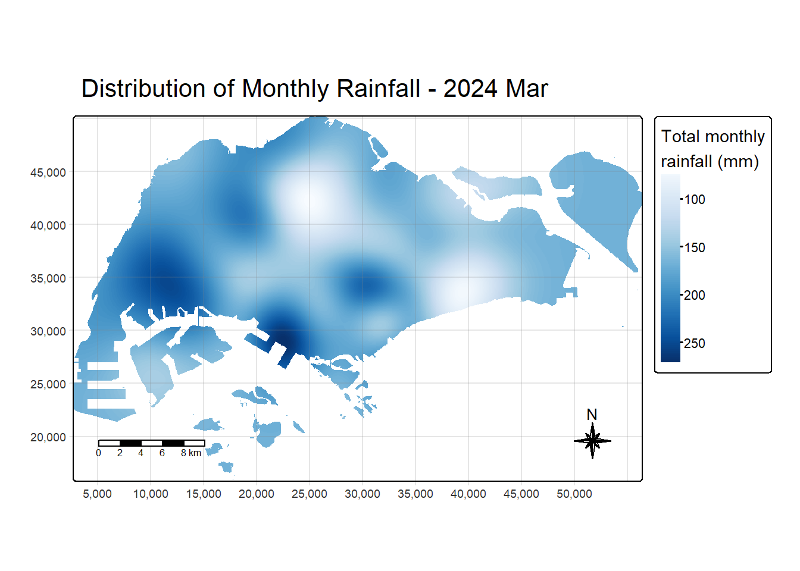

pacman::p_load(jsonify, jsonlite, tidyverse, lubridate, tsibble, sf, terra, gstat, automap, tmap, viridis)Overview
Spatial variability is explored through interpolation techniques to generate choropleth maps of rainfall intensity across Singapore.
1. Getting Started
1.1 Installing Packages
1.2 Importing Data
A total of three datasets sourced from the Meteorological Service Singapore (MSS) are utilized in this analysis.
Weather Data (2018 - 2024): Covers rainfall records from 63 stations across Singapore over a 7-year period (Jan 2018 - Dec 2024). Data was extracted, merged, and processed using Python to form a complete time-series dataset.
Rainfall Station Coordinates: Contains latitude and longitude information for all 63 rainfall stations.
Active Rainfall Stations: Contains latitude and longitude information for 27 stations that are currently active.
weather <- read.csv("data/weather_data.csv")
active_stations <- read.csv("data/active_rainfall_stations.csv")
stations <- read.csv("data/RainfallStation.csv")For spatial analysis, all stations with available data at the specified time interval are utilized, including those no longer operational, provided they contain valid measurements for the selected timeframe. For clustering analysis, the analysis is restricted to active stations to maintain uniformity and reliability in the grouping process.
2. Data Preparation
To facilitate accurate data merging, station names were standardized across all datasets. This involved trimming and harmonizing naming conventions to ensure consistency. For example, variations such as “Pasir Ris (Central)” in one dataset and “Pasir Ris Central” in another were aligned by removing special characters and formatting discrepancies.
# remove () for consistent naming}
weather$Station <- gsub("[()]", "", trimws(as.character(weather$Station)))
active_stations$Station.Name <- gsub("[()]", "", trimws(as.character(active_stations$Station.Name)))
stations$Station <- gsub("[()]", "", trimws(as.character(stations$Station)))Active stations are filtered from the weather dataset for use in clustering.
weather_active <- weather %>%
filter(Station %in% active_stations$Station.Name)The datasets are merged, and only the relevant columns are retained. A new column, Date, is created by combining the separate year, month, and day columns into a proper date format.
weather_active <- weather_active %>%
select(Station, Year, Month, Day, Daily.Rainfall.Total..mm.) %>%
filter(!is.na(Daily.Rainfall.Total..mm.)) %>%
merge(active_stations, by.x = "Station", by.y = "Station.Name") %>%
select(Station, Year, Month, Day, Daily.Rainfall.Total..mm., Latitude, Longitude) %>%
mutate(
Date = make_date(Year, Month, Day),
Station = as.factor(Station)
) %>%
arrange(Station, Date) %>%
select(Station, Date, Daily.Rainfall.Total..mm., Longitude, Latitude)weather <- weather %>%
select(Station, Year, Month, Day, Daily.Rainfall.Total..mm.) %>%
filter(!is.na(Daily.Rainfall.Total..mm.)) %>%
merge(stations, by.x = "Station", by.y = "Station") %>%
select(Station, Year, Month, Day, Daily.Rainfall.Total..mm., Latitude, Longitude) %>%
mutate(
Date = make_date(Year, Month, Day),
Station = as.factor(Station)
) %>%
arrange(Station, Date) %>%
select(Station, Date, Daily.Rainfall.Total..mm., Longitude, Latitude)3. Spatial Rainfall Analysis
3.1 Data Pre-processing
The weather station status is first incorporated to distinguish between active and inactive stations for visualization purposes.
weather$Status <- ifelse(weather$Station %in% active_stations$Station.Name, "Active", "Inactive")The dataset is then converted into an sf object to facilitate geospatial analysis and mapping. To ensure proper spatial referencing, the Coordinate Reference System (CRS) is initially set to EPSG:4326, which uses the WGS 84 standard - commonly used for global positioning and representing geographic coordinates in degrees. Subsequently, the spatial object is transformed to EPSG:3414, also known as SVY21 / Singapore TM, a projected coordinate system specifically designed for mapping within Singapore. Unlike WGS 84, SVY21 expresses coordinates in meters, making it more suitable for accurate distance measurements, spatial interpolation, and localized mapping within the Singapore context.
weather_sf <- st_as_sf(weather,
coords = c("Longitude",
"Latitude"),
crs= 4326) %>%
st_transform(crs = 3414)It is visualized as shown below.
# tm_check_fix()
# tmap_mode("view")
#
# tm_shape(weather_sf) +
# tm_symbols(
# fill = "Status",
# fill.scale = tm_scale(c("Active" = "#00b050", "Inactive" = "#ff4d4d")),
# size = 0.6,
# size.scale = tm_scale(1),
# fill.legend = tm_legend("Status"),
# popup.vars = c("Station")
# ) +
# tm_title("Weather Station Map") +
# tm_view(basemap.server = "Esri.WorldTopoMap")Next, the data is aggregated to represent monthly spatial points, summarizing rainfall measurements by station and month. For spatial referencing, the latitude and longitude values for each station are extracted using the first() function, as these coordinates remain constant within each station.
rf_data <- weather %>%
mutate(MonthYear = floor_date(Date, "month")) %>%
group_by(Station, MonthYear) %>%
mutate(MonthYear = yearmonth(MonthYear)) %>%
summarise(
MonthlyRain = sum(Daily.Rainfall.Total..mm., na.rm = TRUE),
Latitude = first(Latitude),
Longitude = first(Longitude),
.groups = "drop"
)rf_data_sf <- st_as_sf(rf_data,
coords = c("Longitude",
"Latitude"),
crs= 4326) %>%
st_transform(crs = 3414)The Singapore boundary shapefile is imported and similarly transformed to the EPSG:3414 coordinate reference system to ensure spatial consistency with the rainfall data.
sg_boundary <- st_read(dsn = "data/geospatial",
layer = "MPSZ-2019") %>%
st_transform(crs = 3414)Reading layer `MPSZ-2019' from data source
`C:\Users\Zi Qi\Documents\SMU\Visual Analytics\zqwxxg\ISSS608-VAA-Group2\Pages\Prototype\data\geospatial'
using driver `ESRI Shapefile'
Simple feature collection with 332 features and 6 fields
Geometry type: MULTIPOLYGON
Dimension: XY
Bounding box: xmin: 103.6057 ymin: 1.158699 xmax: 104.0885 ymax: 1.470775
Geodetic CRS: WGS 84The pre-processed data is visualized using a quantitative dot map, offering a spatial overview of monthly rainfall distribution across Singapore at the station level.
# tm_check_fix()
# tmap_mode("view")
#
# tm_shape(sg_boundary) +
# tm_borders(lwd = 1, col = "gray50") +
# tm_shape(rf_data_sf) +
# tm_dots(fill = 'MonthlyRain', size = 0.8) +
# tm_title("Monthly Rainfall Distribution by Station")tmap_mode("plot")Each blue dot represents a rainfall monitoring station, with the network demonstrating even spatial distribution across the island. This comprehensive coverage spans urban, suburban, central, coastal, and peripheral regions, ensuring that the dataset effectively captures localized variations in precipitation.
3.2 Interpolation Preparation
Spatial interpolation requires the creation of an interpolation grid prior to execution. A regular grid of points is generated within Singapore’s geographical boundaries. Subsequently, two interpolation techniques - Inverse Distance Weighting (IDW) and Ordinary Kriging - are implemented and comparatively evaluated.
Creating Interpolation Grid
First, a raster template is created over the boundary at a specified resolution using terra::rast(), producing a dense grid across the region.
grid <- terra::rast(sg_boundary,
nrows = 690,
ncols = 1075)The centroid coordinates (x, y) of each raster cell are then extracted using terra::xyFromCell().
xy <- terra::xyFromCell(grid,
1:ncell(grid))These coordinates are subsequently converted into an sf object via st_as_sf(), with the coordinate reference system (CRS) aligned to that of sg_boundary. Finally, st_filter(coop, sg_boundary) is applied to retain only grid points within Singapore’s boundaries, discarding external points. The resulting object comprises uniformly spaced spatial points constrained to Singapore’s exact geographical extent.
coop <- st_as_sf(as.data.frame(xy),
coords = c("x", "y"),
crs = st_crs(sg_boundary))
coop <- st_filter(coop, sg_boundary)
head(coop)Simple feature collection with 6 features and 0 fields
Geometry type: POINT
Dimension: XY
Bounding box: xmin: 25883.42 ymin: 50231.33 xmax: 26133.32 ymax: 50231.33
Projected CRS: SVY21 / Singapore TM
geometry
1 POINT (25883.42 50231.33)
2 POINT (25933.4 50231.33)
3 POINT (25983.38 50231.33)
4 POINT (26033.36 50231.33)
5 POINT (26083.34 50231.33)
6 POINT (26133.32 50231.33)Selecting Month
The select_month_data function extracts data for a specified month. This can be utilized to create animated choropleth visualizations over time, facilitating dynamic representation of rainfall patterns across locations. This analysis specifically examines March 2024.
select_month_data <- function(month_label) {
month_data <- rf_data %>%
filter(format(MonthYear, "%Y %b") == month_label)
month_data_sf <- rf_data_sf %>%
filter(format(MonthYear, "%Y %b") == month_label)
return(list(data = month_data, data_sf = month_data_sf))
}month_label <- "2024 Mar"
result <- select_month_data(month_label)
month_data <- result$data
month_data_sf <- result$data_sf3.3 IDW Interpolation
The interpolation process begins by creating a gstat model object, where MonthlyRain ~ 1 specifies that interpolation is based only on spatial location (no covariates). The model configuration employs the 5 nearest known rainfall stations (nmax = 5) to maintain local relevance while preventing oversmoothing. The inverse distance power parameter (idp) is set to 0, implementing uniform spatial weighting to avoid overemphasis of isolated high/low points. This configuration reflects Singapore’s precipitation characteristics, where rainfall patterns exhibit relatively smooth spatial gradients due to the country’s small size.
res <- gstat(formula = MonthlyRain ~ 1,
locations = month_data_sf,
nmax = 5,
set = list(idp = 0))Then, predict(res, coop) computes rainfall estimates at the regularly spaced points. The x and y coordinates are extracted and stored.
# Predict
resp <- predict(res, coop)[inverse distance weighted interpolation]resp$x <- st_coordinates(resp)[,1]
resp$y <- st_coordinates(resp)[,2]
resp$pred <- resp$var1.predFinally, terra::rasterize() converts the point-based predictions into a raster grid by averaging predictions in each raster cell. This raster can then be visualized as a continuous rainfall surface over Singapore.
# Rasterize
pred <- terra::rasterize(resp, grid, field = "pred", fun = "mean")The interpolated rainfall surface is then visualized through a choropleth map.
tmap_mode("plot")
tm_shape(pred) +
tm_raster(
col.legend = tm_legend(title = "Total rainfall (mm)")
) +
tm_title(
text = paste("Distribution of Monthly Rainfall -", month_label),
) +
tm_layout(frame = TRUE) +
tm_compass(type = "8star", size = 2) +
tm_scalebar(position = c("left", "bottom")) +
tm_grid(alpha = 0.2)
The western and southwestern regions (e.g., Jurong, Clementi, Bukit Batok, and Tuas) recorded the highest rainfall levels (200-220 mm), shown in the darkest blue shades. This aligns with typical late Northeast Monsoon influence or possible localized convective rainfall in those areas.
Central zones such as Bukit Timah, Bishan, and Queenstown received 160-200 mm, indicating moderate but widespread rainfall across Singapore’s central catchment area. These areas consistently experience slightly elevated rainfall due to topography and vegetation.
The northeastern and eastern parts of the island (including Changi, Punggol, and Pasir Ris) showed lower rainfall values (100-140 mm). This east-west gradient may reflect weakened monsoon effects or shifts in storm tracks during the transition period between monsoons.
3.4 Ordinary Kringing
Kriging interpolation leverages spatial autocorrelation to generate optimal predictions. The process begins by using autofitVariogram() to automatically fit a variogram model to the rainfall data. The variogram characterizes how rainfall values are spatially related over distance. The fitted variogram is then plotted to visualize the spatial structure of the data.
v_auto <- autofitVariogram(MonthlyRain ~ 1,
month_data_sf)
plot(v_auto)
The semi-variance increases smoothly with distance and levels off near the sill, forming a classic variogram curve. The smooth and gradual rise toward the sill suggests a well-structured spatial process with strong short-range autocorrelation. The absence of a nugget effect and tight clustering of points around the curve indicate high spatial predictability and data quality.
Next, a kriging model is created using the gstat function, incorporating the fitted variogram model and the rainfall data.
k <- gstat(formula = MonthlyRain ~ 1,
model = v_auto$var_model,
data = month_data_sf)The predict() applies the kriging model to the grid points, generating spatial predictions of monthly rainfall. The predicted values are extracted along with their x and y coordinates. Finally, terra::rasterize() converts these point predictions into a raster object, creating a continuous surface that represents interpolated rainfall estimates across the entire study area.
resp <- predict(k, coop)[using ordinary kriging]resp$x <- st_coordinates(resp)[,1]
resp$y <- st_coordinates(resp)[,2]
resp$pred <- resp$var1.pred
resp$pred <- resp$pred
kpred <- terra::rasterize(resp, grid,
field = "pred")The interpolated rainfall surface is then visualized through a choropleth map.
tmap_mode("plot")
tm_shape(kpred) +
tm_raster(
col.scale = tm_scale_continuous(values = "brewer.blues"),
col.legend = tm_legend(title = "Total monthly\nrainfall (mm)")) +
tm_title(
text = paste("Distribution of Monthly Rainfall -", month_label),
) +
tm_layout(frame = TRUE) +
tm_compass(type = "8star", size = 2) +
tm_scalebar(position = c("left", "bottom")) +
tm_grid(alpha = 0.2)
Higher rainfall concentrations (above 250 mm) are observed in south-central and southwestern regions, likely around areas such as Queenstown, Bukit Merah, and Clementi. These zones appear in the darkest blue tones. Other localized high-rainfall zones include parts of the northern and western regions, suggesting patchy rainfall accumulation influenced by local convection or microclimates. Lower rainfall levels (below 150 mm) are observed in the eastern and northeastern zones, such as Tampines, Changi, and Pulau Ubin, which appear in lighter shades of blue.
3.5 Visual Differences
Appearance:
The IDW interpolation map exhibits a more segmented appearance, characterized by sharper transitions between rainfall zones. In contrast, the Ordinary Kriging map displays smoother gradients, offering continuous transitions in rainfall estimates that reflect a more natural spatial variation.
Hotspot areas:
Both methods identify rainfall hotspots in the western and central regions of Singapore. However, while the IDW map presents these areas with clearly defined boundaries, the Kriging map portrays similar hotspots with a more diffused and realistic spatial spread, aligning with expected spatial autocorrelation patterns.
Low-rainfall zones:
In the eastern and northeastern zones, the IDW map shows distinctly delineated low-rainfall areas, whereas the Kriging map reflects a similar trend but with more gradual transitions, resulting in a smoother interpretation of rainfall decline across space.
Interpolation quality:
Overall, IDW performs well in areas with dense station coverage, but it may oversimplify spatial variability, especially where rainfall patterns are complex. Ordinary Kriging, on the other hand, provides statistically optimal estimates, particularly effective when spatial dependence is strong.